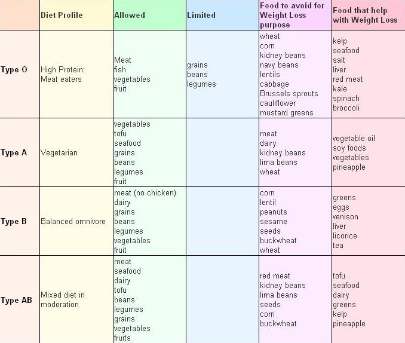

The Blood Type Diet

Some doctors have started to research diets that coincide with particular blood types. The premise of these diets attempts to match people with their common dietary needs based on their blood type. For example, individuals with type O blood are recommended to eat lots of food that are high in protein. In order to lose weight, spinach, red meat, seafood and broccoli are suggested while dairy should be avoided. Those with type A blood are recommended to avoid meat and place an emphasis on turkey, tofu, and fruit while weight loss is contingent on eating a diet that consists primarily of soy, seafood and vegetables. Individuals with type B and AB blood also have their own dietary restrictions and recommendations.
